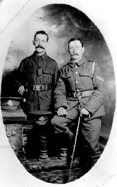
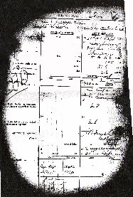
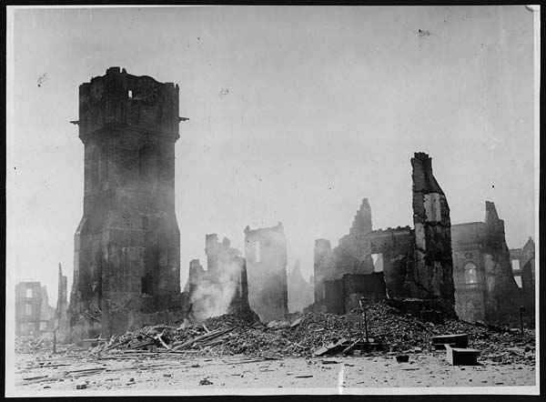

1/5 South Staffordshire Regiment and the Labour Corp

Tom still in the uniform of the South Staffs,
with brother-in-law Thomas Warren
In Oct 1917 Tom was transferred to the 1/5th South Staffordshire Regiment, 46th Division, VII Corps, Third Army. At this time they were stationed near Bethune. The billets behind the line were comfortable and there were organised games and concerts.
One month later on November 3 he was attached to the 240th Employment Company. The 240 Divisional Employment Company had been formed on 25 June 1917 and was attached to 46th (North Midlands) Division. They were located at the Division's HQ and made up of 2 Officers, 1 Company Quarter Master Sergeant, 270 NCO's and Privates, an Orderly Room Clerk and a Batman. Their role was a very varied one including running the divisional baths, laundry, cinema, stores, and officers mess as well as acting as divisional police and undertaking guard duty. Within the Company there were specialists such as tailors, shoemakers, butchers and telephone operators. Tom was described as 'officers cook'.

His transfer to the 240th Employment Company, Labour Corp, may have some connection with the two weeks that Tom had spent at the 23rd Divisional Reinforcement Camp in the previous August. Although there is no mention of wounding on his record he was now 49 and may have been suffering ill health.
Whilst in the Labour Corp he remained with many of his Loughborough friends. After a month in billets the 46th Division returned to the line. The German Army launched their spring offensive in 1918. The Germans broke through south of Arras on March 21st 1918. The 46th was ordered to relieve a Canadian Division at Lens on March 27th. There were many gas shells at Lens and a vicious air attack on transport lines. The Division was relieved on April 11th.
The Division next took over the line north of La Bassee Canal on the 25th. There were considerable gas bombardments throughout May including one on May 21st which inflicted many hundreds of casualties.

During June the 46th held the Bethune Sector under persistent shelling, which included gas. Air raids were frequent and dangerous and imposed many restrictions behind the line. There was also a danger posed by shell fragments from British aircraft.
